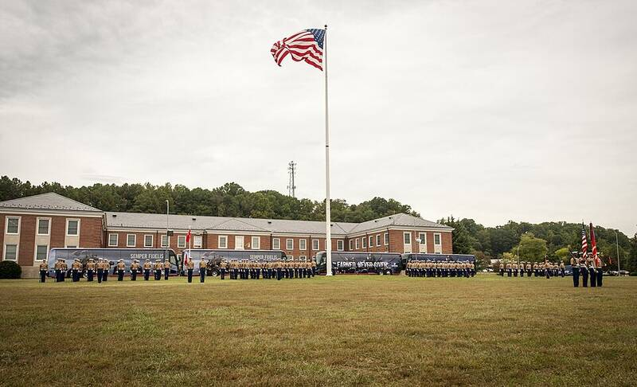

MCB Quantico
Virginia

Marine Corps base and home of the FBI Academy. 1
Open in the interactive Watcher
Sources
- Marine Corps Base Quantico Wikipedia
Virginia

Marine Corps base and home of the FBI Academy. 1
Open in the interactive Watcher